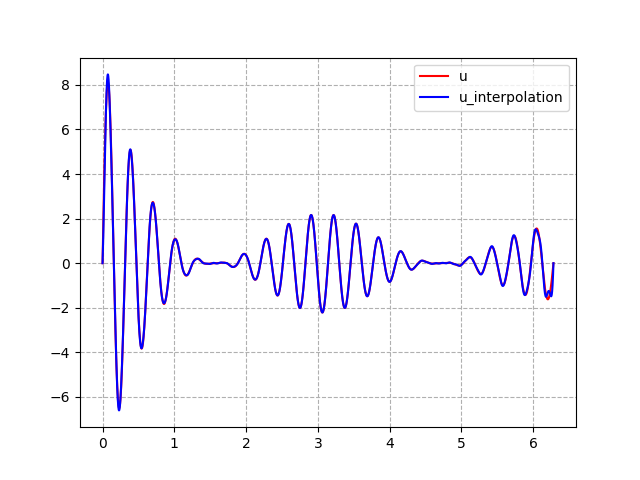
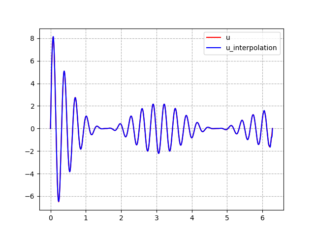

写在前面
最近学习傅里叶谱方法, 需要用到傅里叶变换, 故学习一下. 傅里叶变换, 傅里叶级数, 离散傅里叶变换, 有三个不同的 傅里叶, 他们的关系是:
- 若函数定义域是有限区间 \([a, b]\), 那么可以认为函数是周期为 \(b-a\) 的周期函数, 可以展开成傅里叶级数;
- 当函数的定义域是 \(\mathbb R\), 那么函数可以认为是周期为正无穷的周期函数, 这时傅里叶级数变成了积分形式, 这个函数到傅里叶系数的变换称为傅里叶变换
- 对于有限周期的函数, 当我们只取傅里叶级数展开的 \((-N, N)\) 部分, 那么此时我们有了一个这个函数的逼近, 那么函数再固定点处的值可以由这 \(2N\) 个基函数的值线性表出, 固定点处的值到表出系数的变换称为时离散傅里叶变换.
简介
根据傅里叶级数的知识可知: 若函数 \(u \in L^1(0, l), \omega = \frac{2\pi}{l}\), 则存在 \(\{c_n\}_{n=-\infty}^{+\infty} \in \mathbb C\) 使得:
\[u(x) = \sum_{n = -\infty}^{+\infty} c_n e^{\omega i nx}\]其中 \(c_n\) 被称为 \(u(x)\) 的傅里叶系数:
\[c_n = \frac{1}{l} \int_0^l u(x)e^{-\omega inx}\ \mathrm dx\]可以验证 \(\{e^{\omega i nx}\}_{n = -\infty}^{+\infty}\) 线性无关且相互 \(L^2\) 正交:
\[\int_0^l e^{\omega i n_0x} e^{\omega i n_1x} \ \mathrm dx = \delta_{n_0 n_1}\]所以 \(\{e^{\omega i nx}\}_{n = -\infty}^{+\infty}\) 可以认为是线性空间 \(L^1(0, l)\) 的基函数(因为 \(L^1(0, l)\) 上的任意函数都能用这组函数线性表出). 这组基函数有无穷多个, 现在我们选取有限个基函数 \(\{e^{\omega i nx}\}_{n = -N}^{N-1}\) 张成的空间来逼近 \(L^1(0, l)\)
\[u(x) \approx \sum_{n = -N}^{N-1} c_n e^{\omega i nx}, \quad u(x) \in L^1(0, l)\]可以证明:
\[\lim_{N \to \infty} \sum_{n = -N}^{N-1} c_n e^{\omega i nx} = u(x), \quad \forall u(x) \in L^1(0, l)\]且在 \(L^2\) 范数下这个收敛速度是指数收敛.
离散傅里叶变换
作 \([0, l]\) 的剖分
\[P_N = \{x_0 = 0, x_1 = \frac{l}{2N}, \cdots, x_k = k\frac{l}{2N}, \cdots, x_{2N} = l\}\]记 \(u_j = u(x_j), j = 0, 1, \cdots, 2N-1\), 根据前面的讨论我们有如下的近似:
\[u_j \approx \sum_{n = -N}^{N-1} c_n e^{\omega \mathrm in x_j} = \sum_{n=0}^{2N-1} c_n e^{\omega \mathrm inx_j}\]其中第二个等式的原因为:
\[e^{\omega \mathrm i 2N x_j} = e^{\mathrm i(2\pi j)}=1, \quad e^{\omega \mathrm i nx_j} = e^{\omega \mathrm i (n+2N)x_j}\]令 \(\boldsymbol u = [u_0, \cdots, u_{2N-1}]^T, \boldsymbol E = (e^{\omega ijx_k})_{jk}\), 显然 \(\boldsymbol E\) 非奇异, 所以存在向量 \(\boldsymbol{\hat u} = [\hat u_0, \hat u_1 \cdots, \hat u_{N-1}, \hat u_{-N}, \hat u_{-N+1}, \cdots, \hat u_{-1}]\) 使得:
\[(2N)^{-1}\boldsymbol{E\hat u = u}\]其中 \(\boldsymbol{\hat u}\) 可以看作是 \(2N[c_0, c_1 \cdots, c_{N-1}, c_{-N}, c_{-N+1}, \cdots, c_{-1}]\) 的近似.
所以
\[u(x) \approx (2N)^{-1}\sum_{n = -N}^{N-1} \hat u_n e^{\omega \mathrm in x}\]y右端称为是 \(u\) 的傅里叶插值. 已知 \(\boldsymbol u\) 求解 \(\boldsymbol {\hat u}\) 需要知道 \(\boldsymbol E^{-1}\), 而离散傅里叶变换非常优美的地方就在于: \(\boldsymbol E^{-1}\) 是已知的!
\[\boldsymbol E^{-1} = (2N)^{-1}(e^{-\omega \mathrm ijx_k})_{jk}\]快速傅里叶变换
众所周知, 虽然 \(E^{-1}\) 是已知的, 但是其计算复杂度为 \(O(N^2)\), 上世纪 60 年代出现了快速傅里叶变换 \(\mathrm{fft}\) 将从 \(\boldsymbol u\) 到 \(\boldsymbol {\hat u}\) 的计算复杂度降到 \(O(N\cdot logN)\) 在 python 语言的 scipy 库中已实现 \(\mathrm{fft}\) 算法, 下图为 \(\mathrm{fft}\) 算法实现傅里叶插值.
- 对 Runge 函数 \(f(x) = \frac{1}{(x-5)^2+1}\)作傅里叶插值：N = 4
 N = 8
N = 8 - 对函数\(f(x) = \frac{(3+x)^2\sin(20x)\cos^2(x)}{(x+1)^2}\)作傅里叶插值： N = 64  N = 128
 N = 8
N = 81
2
3
4
5
6
7
8
9
10
11
12
13
14
15
16
17
18
19
20
21
22
23
24
25
26
27
28
29
30
31
32
33
34
35
36
37
38
39
40
41
42
43
44
45
46
47
48
49
50
51
52
53
54
55
56
57
58
59
60
61
import scipy.fft as fft
import numpy as np
import matplotlib.pyplot as plt
import sys
def ff(x):
"""@
@brief R -> R
"""
return (3+x)**2*np.sin(x*20)*np.cos(x)**2/(x+1)**2
#插值基函数
def basis(x, N, l):
"""
@brief 插值基函数以 N = 4 为例, 基函数的排列方式为
[0, 1, 2, 3, -4, -3, -2, -1]
"""
x = x[:, None]@(np.r_[np.arange(N), -np.arange(1, N+1)[::-1]][None, :])
om = 2*np.pi/l
val = np.exp(om*1j*x)
return val
#插值函数
def fourier_interpolation(f, l, N):
"""
@brief 计算函数 $f$ 在格点处的值, 经过快速傅里叶变换 fft
得到其傅里叶系数的近似
@param f : 被插值的函数
@param l : 定义域为 [0, l]
@param N : 基函数的个数 2N
"""
x = np.linspace(0, l, 2*N, endpoint=False)
fval = f(x)
hfval = fft.fft(fval)
#hfval = dft(x, fval)
def fourier_function(x):
bval = basis(x, N, l)
return bval@hfval/(2*N)
return fourier_function
def dft(x, fval):
"""
@param dft 算法
"""
x = x[:, None]@(np.r_[np.arange(N), -np.arange(1, N+1)[::-1]][None, :])
om = 2*np.pi/l
val = np.exp(-om*1j*x).T@fval
return val
l = 2*np.pi
N = int(sys.argv[1])
g = fourier_interpolation(ff, l, N)
X = np.linspace(0, l, 10000)
ffval = ff(X)
gval = g(X)
plt.grid(ls='--')
plt.plot(X, ffval, c = 'r')
plt.plot(X, gval, 'b')
plt.legend(['u', 'u_interpolation'])